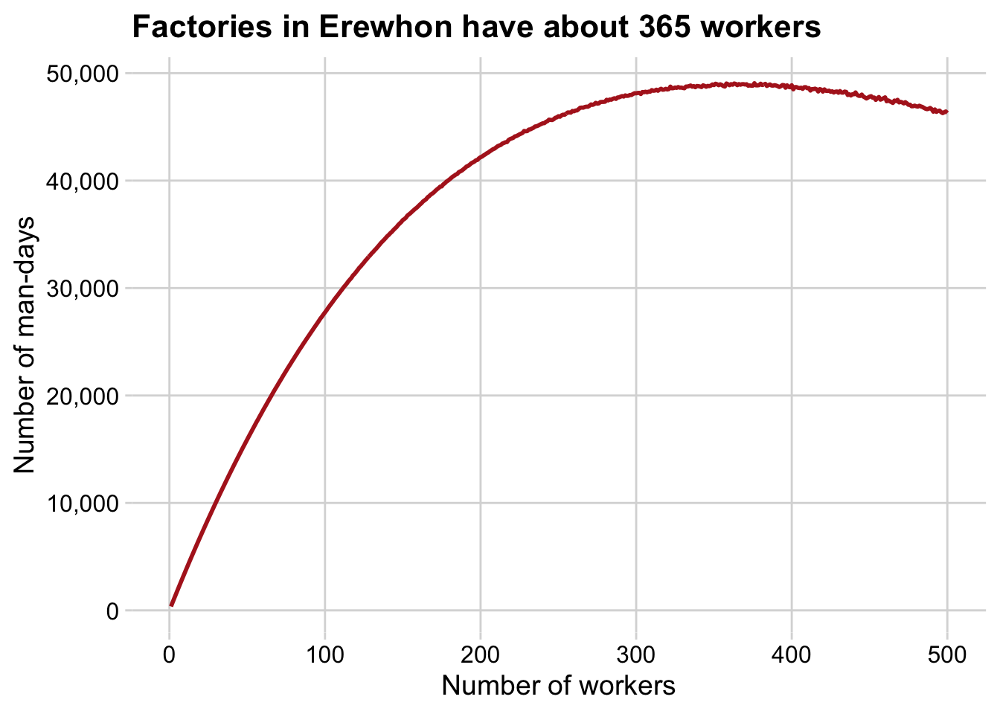
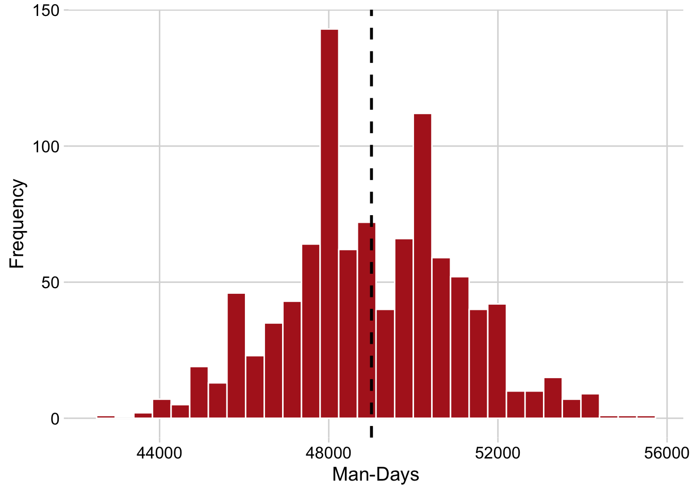
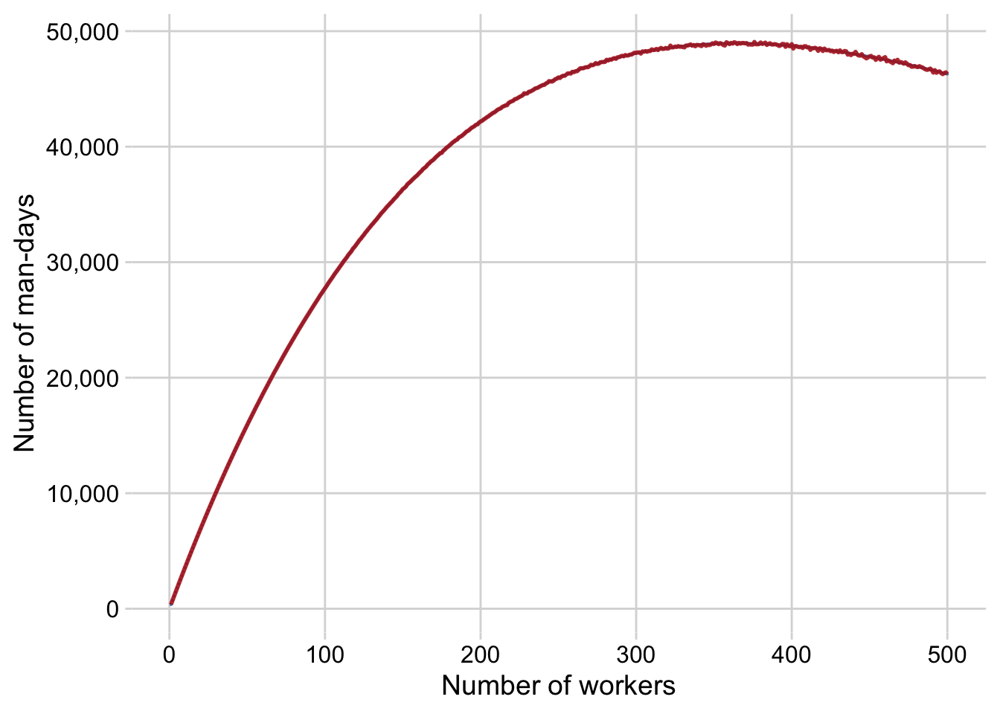

Packages used in this post
library(tidyverse)
library(cowplot)
library(kableExtra)
theme_set(theme_minimal_grid())Paw Hansen
June 11, 2024
As summer approaches, I found the time to write up a brief post on the “factory workers in Erewhon” problem - another classic probability puzzle.
The puzzle is as follows: Labor laws in Erewhon require factory owners to give every worker a holiday whenever one of them has a birthday, and they must hire without discrimination based on birthdays. Except for these holidays, they work a 365-day year. The owners want to maximize the expected total number of man-days worked per year in a factory. How many workers should the factories in Erewhon employ?
To tackle this problem, we start by writing a function to simulate a single year. For our case in Erewhon, the function might look something like this:
simulate_one_year <- function(n_workers) {
# Calculate the number of holidays for a year with n_workers
# replace = TRUE because workers may share birthdays
n_holidays <- length(unique(sample(1:365, n_workers, replace = T)))
# Number of work days = # Days in year - # holidays
n_work_days <- 365 - n_holidays
# And then the man-days...
man_days <- n_work_days * n_workers
return(man_days)
}This function takes the number of workers in a given factory as input, simulates the occurrence of birthdays in a year, and uses that to calculate the resulting man-days.
Let’s ensure it works by trying it with 10 workers:
The function returns 3,550 man-days. Now, let’s optimize this to find the ideal number of workers for maximizing man-days in a factory.
We’ll use crossing to create a combination of trials (simulations) and the number of workers:
The function takes a little time to run. Afterward, we can calculate the results:
| Number of workers | Resulting man-days |
|---|---|
| 376 | 49,063.86 |
| 363 | 49,038.03 |
| 358 | 49,037.41 |
| 380 | 49,018.48 |
| 351 | 49,015.75 |
| 383 | 49,006.38 |
Our simulation analysis suggests that the optimal number of workers is around 376, which is close to the true number of 364/365 found using calculus. Depending on the desired level of precision, our estimate might be good enough. Simulation has brought us close without needing to delve into complex probability theory.
We can also visualize our results:

And say we wanted to calculate confidence intervals for the number of man-days provided the 365 optimal number of factory workers
set.seed(25062024)
sims_2 <-
tibble(
man_days = replicate(1000, simulate_one_year(365))
)
quantile(sims_2$man_days, probs = c(0.025, .5, 0.975 )) 2.5% 50% 97.5%
44895 48910 53290 Likewise, we could plot the uncertainty using a histogram:

A final note: We could also have calculated the expected number of man-hours using calculus and probability theory (you can look up the formulas online, just type “factories erewhon”). Let’s do that and compare those numbers with our simulations

Almost impossible to distinguish!
Our simulation has demonstrated that the optimal number of factory workers in Erewhon is approximately 365, balancing the trade-off between birthdays and workdays effectively. This result, derived through simulation, closely aligns with the theoretical maximum obtained using calculus. Simulation provides an accessible and intuitive approach to solving complex probability problems, making it an invaluable tool for decision-making in uncertain scenarios.
By employing the tidyverse suite in R, we’ve not only solved a fascinating probability puzzle but also showcased the power of simulations in optimizing real-world decisions. Whether you’re a factory owner in Erewhon or tackling a different optimization problem, simulations can provide clear insights and guide you to the best outcomes.